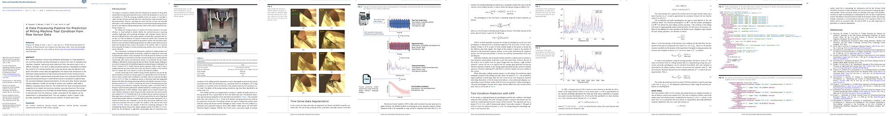

Machine Tool Condition Prediction
With recent advances in sensor and computing technology, it is now possible to use real-time machine learning techniques to monitor the state of manufacturing machines. In this Project, a Gaussian process regression model is developed to predict the condition of a milling machine tool. Sensor data is aggregated into blocks that correspond to the individual cutting operations of the Computer Numerical Control (CNC) milling machine. Each block of time-series data is transformed to the frequency domain and compared to other blocks using an isotropic Gaussian kernel. We demonstrate that this block-wise analysis technique allows advanced machine learning models to be applied at real-time speed without sacrificing accuracy. The tool-condition model is shown to be accurate, especially when predicting the condition of lightly worn tools.
Tool condition prediction for three testing data sets using the model with the SSE kernel. Each plot represents a test where the milling machine was run until the cutting tool became severely worn or broken. The shaded region represents the 90% confidence interval for each prediction.
Motivation
In traditional manufacturing processes, a human operator either controls or oversees the operation of manufacturing machines. The human operator uses prior knowledge of the manufacturing process to judge whether the operation is working correctly, and interferes if necessary. For milling and turning processes, it is common for a human operator to use sound, vibration or visual methods to identify whether the mechanical process is operating smoothly. Processing sensory input is a behavior that humans do particularly well. Replicating such monitoring techniques with computer systems, however, has proven difficult because of the volume, sparsity and noise that is associated with sensory data [4]. Automated manufacturing machines are unable to detect when a process is faulty until damage has been caused to the product or the machine. Hence, it appears that there is a need for better automated techniques to monitor manufacturing machine and to ensure that it operates efficiently.
Discretization of Time Series Data
Left: Acceleration time series measured while a single part was being produced. The time series data shows that the machine performs a series of repetitive actions, separated by brief idle periods. Right: The acceleration time series after each action was labelled using data from the machine controller
The milling machine performs a number of different operations to produce a part. The data from the milling machine controller is used to automatically discretize and label the time series data. Each cutting operation is separated by a brief air-cutting operation, in which the machine pauses briefly between cuts. We use the term “air cutting” to denote the operation of running the spindle without removing material. The terms “climb cutting” and “conventional cutting” refer to the relationship between the rotation direction to the feed direction.
Aggregation and Noise Reduction
In this section, we describe how the sparse and noisy time-domain signals are transformed into intermediate representations which capture the sort of information that a human operator would use to evaluate the manufacturing process. As the audio and vibration signals are periodic, it seems natural to analyze the signals in the frequency domain.
Left: Comparison of the audio periodograms recorded with a sharp tool and a worn tool, while a climb-cutting operation was being performed. Right: Comparison of the acceleration periodograms recorded with a sharp tool and a worn tool, while a climb-cutting operation was being performed
We assume that the frequency content of the recorded signals is solely dependent on the operation being performed by the machine and the condition of the machine tool. It follows from this assumption that the frequency content should be relatively constant over the duration of each machine operation. We also assume that the audio and acceleration signals are recorded with a non-trivial amount of noise. We attempt to deduce the power spectrum of the acceleration and audio signals, whilst reducing the influence of noise. Welches method is used to compute the power specutrum of the audio and acceleration signals. Welch's method is an improvement on the standard periodogram method, in that it reduces noise in the estimated power spectra in exchange for reducing the frequency resolution.
Gaussian Process Regression
In GPR, a Gaussian process (GP) is used as a prior to describe the distribution on the target function value $f(\boldsymbol{x})$ at an unseen input $\boldsymbol{x}$. A GP is a generalization of the Gaussian probability distribution for which any finite linear combination of samples has a joint Gaussian distribution. A GP can be fully specified by its mean function $m(\boldsymbol{x})$ and covariance kernel function $k(\boldsymbol{x},\boldsymbol{x}')$:
\[ p(f^{1:n}) = GP(m(\boldsymbol{x}),k(\boldsymbol{x},\boldsymbol{x}')) \]where $f^{1:n}=(f(\boldsymbol{x}^1 ),f(\boldsymbol{x}^2 ),…,f(\boldsymbol{x}^n ))$ are latent function values. The mean function and covariance kernel are defined as:
\[ m(\boldsymbol{x}) = \mathop{\mathbb{E}}[f(\boldsymbol{x})] \\ \\ k(\boldsymbol{x}, \boldsymbol{x}') = \text{cov}(f(\boldsymbol{x}),f(\boldsymbol{x}')) \]The mean function $m(\boldsymbol{x})$ captures the overall trend in the target function value, and the kernel function $k(\boldsymbol{x},\boldsymbol{x}')$ is used to approximate the covariance between the two function values $f(\boldsymbol{x})$ and $f(\boldsymbol{x}')$. We denote the vibration periodogram $\hat{\boldsymbol{s}}_v^{(i)} \in \mathbb{R}^{256}$ and acoustic periodogram $\hat{\boldsymbol{s}}_a^{(i)} \in \mathbb{R}^{256}$ for each milling machine action $i$. Furthermore, we assume that the previous condition of the tool, $c^{(i)}$, is known. Altogether, we denote the input features for each milling operation $i$ as:
\[ \boldsymbol{x}^{(i)} = \begin{bmatrix} c^{(i)} \\ \hat{\boldsymbol{s}}_a^{(i)} \\ \hat{\boldsymbol{s}}_a^{(i)} \end{bmatrix} \]Each input feature vector $\boldsymbol{x}^{(i)} \in \mathbb{R}^N$ is associated with a tool condition observation $y^{i}$. Given the historical outputs $y^{1:m}=\{y^1,…,y^m\}^T$ in the training data set, our goal is to estimate the tool condition $f(\boldsymbol{x}^{new})$ corresponding the newly measured input feature vector $\boldsymbol{x}^{new}$.
Kernals
The type of kernel function chosen can strongly affect the representability of the GPR model, and influence the accuracy of the predictions. The squared exponential (SE) kernel is a common choice for a GPR model:
\[ k_{SE} (\boldsymbol{x}^{(i)}, \boldsymbol{x}^{(j)} ) = \sigma^2 \exp \left( \frac{-1}{2\ell^2} ||\boldsymbol{x}^{(i)} -\boldsymbol{x}^{(j)} ||^2 \right) \]where the kernel function is described by the hyperparameters, $\sigma$ and $l$. While the SE kernel function is a good choice for many applications, it does not allow the length scale to vary for each dimension in the feature vector. A common solution is to use an automatic relevance determination (ARD) kernel, which assigns a different length scale to each dimension. The ARD squared exponential kernel is a commonly used with GPR:
\[ k_{ARD} (\boldsymbol{x}^{(i)}, \boldsymbol{x}^{(j)} ) = \sigma^2 \exp \left( \frac{-1}{2} (\boldsymbol{x}^{(i)} - \boldsymbol{x}^{(j)} )^T \text{diag}(\boldsymbol{\ell})^{-2} (\boldsymbol{x}^{(i)} - \boldsymbol{x}^{(j)} ) \right) \]The ARD kernel provides the flexibility to adjust the relevance (weight) of each parameter in the feature vector where the parameter vector $\boldsymbol{\ell} = (\ell_1,…,\ell_i,…,\ell_m)$ quantifies the relevance of the input features. However, when using the ARD squared exponential kernel, the number of hyperparameters grows linearly with the dimensional size of the feature vector. This can make the model very prone to overfitting, depending on the hyperparameter optimization strategy [21]. To overvcome this, we choose to create a new kernel by combining several Gaussian kernels. The resulting sum of square exponential (SSE) kernel is defined as follows:
\[ k_{SSE} (\boldsymbol{x}^{(i)}, \boldsymbol{x}^{(j)} ) = \sigma^2_1 \exp \left( \frac{-1}{2\ell^2_1} ||\boldsymbol{c}^{(i)} -\boldsymbol{c}^{(j)} ||^2 \right) + \sigma^2_2 \exp \left( \frac{-1}{2\ell^2_2} ||\hat{\boldsymbol{s}}_v^{(i)} -\hat{\boldsymbol{s}}_v^{(j)} ||^2 \right) \sigma^2_3 \exp \left( \frac{-1}{2\ell^2_3} ||\hat{\boldsymbol{s}}_a^{(i)} -\hat{\boldsymbol{s}}_a^{(j)} ||^2 \right) \]where $\sigma_1$,$\sigma_2$,$\sigma_3$,$l_1$,$l_2$ and $l_3$ are the parameters to be determined for the SSE kernel function. When compared to the ARD kernel, the SSE kernel has fewer hyperparameters, but still allows the length scale of the previous state and periodograms to be adjusted independently.
Experiments
The milling machine was programmed to produce a number of simple parts by removing material from a solid steel block. The production of each part required the milling machine to perform 19 separate cutting operations. The machine was instructed to produce parts until the cutting tool became severely damaged, or the cutting tool broke. The operating parameters of the machine were adjusted to increase the rate of tool wear in the experiments.
Experimental setup in a Mori Seiki NVD1500DCG milling machine showing (1) the cutting tool and (2) the sensor unit from Infinite Uptime
A waterproof sensor unit from Infinite Uptime is attached to the vise of the milling machine. The sensor unit is capable of measuring both the audio and triaxial acceleration signals inside the milling machine. The acceleration signal is recorded in the x-, y- and z-directions at 1000 Hz. The audio signal is recorded at 8000 Hz. Data is streamed from the sensor to a laptop computer using a Universal Serial Bus (USB) connection.
Left: Comparison of the audio periodograms recorded with a sharp tool and a worn tool, while a climb-cutting operation was being performed. Right: Comparison of the acceleration periodograms recorded with a sharp tool and a worn tool, while a climb-cutting operation was being performed
Results
Two GP models are trained to predict tool condition; the first is trained with climb-cutting data from the training set, and the second is trained with conventional-cutting data from the training set. The two models are then used together to predict the condition of the tool for each test case. Predictions are made in the order that the testing data was recorded. In our experiments, models are trained using three different kernel functions. The prediction accuracy for each case is shown in Table 1. The results demonstrate that the model with the SE kernel generalizes well, but it underfits the training data. The model with the ARD squared exponential kernel however overfits the training data, but the kernel does not achieve good performance on the testing set. The model with the SSE kernel generalizes well and achieves reasonably good performance.
Tool condition prediction for three testing data sets using the model with the SSE kernel. Each plot represents a test where the milling machine was run until the cutting tool became severely worn or broken. The shaded region represents the 90% confidence interval for each prediction.
Tool condition prediction when the previous state $c^{(i)}$ was omitted from the feature vector. The shaded region represents the 90% confidence interval for each prediction.
Paper

M. Ferguson, R. Bhinge, Yung-Tsun T. Lee and K. H. Law, "A Data Processing Pipeline for Prediction of Milling Machine Tool Condition from Raw Sensor Data", Smart and Sustainable Manufacturing Systems (SMSS). 2018.
[Paper]